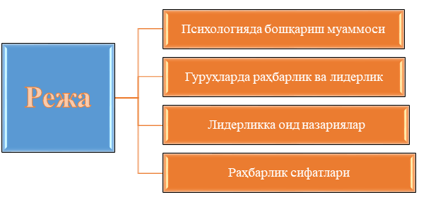
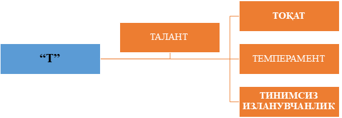
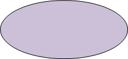
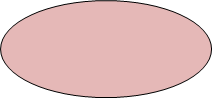

|

1-Режа. Психологияда бошқариш муаммоси
Охирги йилларда инсон омилига эътиборнинг ортиб бориши муносабати билан бошқариш психологияси масалаларига ҳам қизиқиш кучайди. Шу асосда ижтимоий психологиянинг махсус бўлими — бошқариш психологияси пайдо бўлди. Бошқариш психологияси психологиянинг шундай тармоғики, у бошқарув фаолияти билан боғлиқ бўлган муаммоларни, шахс ва шахслар гуруҳи томонидан бошқа гуруҳлар фаолиятини самарали ташкил этиш ва биргаликдаги фаолиятини амалга оширишнинг психологик механизмларини ўрганади.
Бошқариш муаммолари ҳам бир қанча фанлар томонидан ўрганилади, жумладан, фалсафа, тарих иқтисод, хуқуқшунослик ва психология унинг ўзига хос томонларини очиш билан шуғулланади. Психология бошқаришни ҳам объекти, ҳам субъектини ўрганади. Психологик тадқиқотларда ўрганиладиган олимлар жамоаси, алоҳида шахс, уларнинг психологик ҳолатлари, улардаги айрим жараёнлар ва вазифалари бошқарув объекти деб айтилади. Бошқарувнинг субъекти ўрганилганда эса одатда бошқарувчи шахс ёки одамлар гуруҳи назарда тутилади.
Психология кўпроқ бошқарувчи шахс фаолиятининг психологик асосларини ўрганади ва шу асосда буйсунувчилар ишларинн самарали ташкил этиш, аниқ ва тўғри қарорлар қабул қилиш учун қандай психологик холат ва жараёнларни ўзида тарбиялаш лозимлиги каби қатор муаммоларни ечади. Масалан, конкрет ҳаётий шароитларда агар бошлиқ мажлис олиб бораётган бўлса, ҳар бир сўзга чиқувчиларнинг фикрлари, маърузалари ва ҳоказолар орқали уларнинг психологик ҳолатлари аниқланади, янги иш дастурлари ишлаб чиқарилади, қабул қилинган қарорларга кўра бошлиқнинг ва ходимларнинг ҳар бирига алоҳида илмий кўрсатмалар ва маслаҳатлар берилади.
Бошқарув психологияси бошлиқ фаолиятини анализ қилганда асосий диққатни бошқариш унинг эҳтиёжи ёки қобилиятларига мос ёки мос эмаслиги, қайси индивидуал хусусиятларига кўра у бошлиқ даражасига кўтарилди, ишни муваффақиятли амалга ошириш учун у бошқарувнинг қай усулларидан фойдаланяпти, ходимларга психологик таъсир кўрсатиш мақсадида у қандай таъсир услубларини қўллаяпти каби қатор масалаларга қаратади. Бошлиқ бўлиш ишига турли шахсларнинг муносабатлари ҳар хил, чунки кимдир бошлиқда бўлган имтиёзларга берилади, ким учундир унга берилажак ҳуқуқларни афзал кўриш хос, кимгадир юксак масъулиятларни бўйинга олиш маъқул келади. Шахсларнинг бошлиқ функциялари ҳақидаги тасаввурлари қанчалик хилма-хил бўлмасин, бошлиқдан реал шароитларда одамлар гуруҳини аниқ мақсад асосида фаолиятга йўллаш, уларга бош бўлиш, турли тадбирларни амалга ошириш, обрўга эга бўлиш, ҳар бир қилинган иш учун жавобгарликни ўз буйнига олиш каби кўплаб сифатларнинг мужассам бўлиши талаб қилинади.
Айниқса бошлиқ учун турли гуруҳлардаги, кўп ҳолда бир бошлиқ учун бир вақтнинг ўзида бир қанча гуруҳлардаги шахслараро муносабатларнинг характерига жавобгар бўлиш қийинчиликлар турдиради, чунки ўша гуруҳларни ташкил этган ҳар бир шахснинг ўзига хос индивидуаллиги, бошқарувчи ҳақидаги улар тасаввурининг ҳар хиллиги ва гуруҳларда норасмий лидерларнинг борлиги бошлиқдан одамлар билан ишлаш борасида ҳам тажрибанинг, ҳам психологик фаҳмфаросатнинг ва сабр-қаноатнинг бўлишини талаб қилади. Шунинг учун ҳам кундалик ҳаётимизда, ҳам илмий адабиётларда тез-тез ёнма-ён ишлатиладиган ''лидер" ва ''бошлиқ" тушунчаларининг психологик мазмунларини анализ қилиб чиқиш мақсадга мувофиқдир.
2-Режа. Гуруҳларда раҳбарлик ва лидерлик
Гуруҳлардаги ўзаро муносабатлар юқоридан пастга ёки аксинча бўлиб, гуруҳ аъзоларининг конкрет мавқелари, бошлиқ билан бўйсунувчилар ўртасидаги муносабатларни ўз ичига олади. Бу борада ''лидер" ва ''бошлиқ" тушунчалари ўртасидаги фарқлар ҳакида гапириш лозим. Б.Д. Паригин бу икки тушунани фарқлаб шундай ёзади:
1) лидер асосан гурухдаги шахслараро муносабатларни бошқарса, раҳбар - шу гуруҳдаги расмий муносабатларни бошқаради;
2) лидерлик кичик гуруҳларгагина хос бўлган ҳодиса бўлса, раҳбарликнинг ҳақ-хуқуқлари катта гуруҳлар доирасида ҳам содир бўлиши, амалга оширилиши мумкин;
3) агар лидерлик стихияли, бетартиб жараён бўлса, раҳбарлик мақсадга қаратилган, жамиятда ишлаб чиқилган нормалар, тартиблар асосида сайловлар оқибатида содир бўладиган ҳодисадир;
4) лидерлик раҳбарликка нисбатан вақтинчалик ҳодиса бўлиб, гуруҳ аъзоларининг кутишлари, уларнинг кайфиятлари, фаолият йуналишига қараб, узоқроқ муддатда ёки қисқа муддатда рўй беради;
5) раҳбарнинг лидердан фарқи яна шундаки, у лидерда йўқ бўлган жазолаш ва рагбатлантириш тизимига эга бўлиб, шу асосда ўз ходимларига таъсирини ўтказиши мумкин;
6) лидер гуруҳда у ёки бу қарорлар, кўрсатмалар, ташаббусларни ўз ихтиёрича, бевосита чиқариши мумкин, раҳбарда эса бу йўналишда кўплаб расмий кўрсатмалар, режалар, нормалар, буйруқлар мавжудки, улар доирасидан чиқиб кетиши кийин;
7) лидернинг фаолияти фақат кичик гуруҳлар доирасида амалга оширилса, раҳбар шу гуруҳдаги, кенгроқ ижтимоий доирадаги, жамиятдаги вакили бўлганлиги учун, унинг ваколатлари ҳам кенг, фаолият имкониятлари ҳам ортиқдир.
Лидер ҳеч қачон ёлғиз бўлмайди, у доимо гуруҳ аъзолари орасида бўлади, у шу гуруҳ аъзоларини у ёки бу ҳаракатларга чорлайди. Чунки лидер гуруҳ аъзоларининг психологияси, уларнинг кайфиятлари, интилишлари, қизиқишлари ва ҳоказоларни ҳаммадан ҳам яхши билади, улар ичида энг ташаббускоридир. Агар синф доирасида олиб қараладиган бўлса, турли хил лидер борлигини аниқлаш мумкин. Масалан, гуруҳ аъзолари ичида энг билағони, ақл ўргатувчиси, топқири, интеллектуал лидери, болалар ичида энг ҳазилкаши, дилкаши, хушчақчағи, кўнгил сўровчиси, ўзгаларни тушуна оладиган — эмоционал лидер, гуруҳни иш фаолиятга чорлай оладиган, дадил, қатьиятли, иродали-иродавий лидерлар бўлиши мумкин. Улар айни вазиятларда вазият талабига кўра пайдо бўладилар ҳамда болалар онгида ўз сифатларига кўра обрў қозонадилар. Лидер сифатлари ичида яхши ва ёмонлари ҳам бўлиши мумкин, лекин гуруҳ лидерга эргашганда, уни ибрат сифатида танқидсиз қабул қилади ва шунинг учун ҳам барча ишларига эргашиб, кўрсатмаларига амал қилади. Мактабда болалар ёшида хулқи мактаб нормаларига тўғри келмайдиган лидерларнинг борлиги, улар маълум гуруҳ ичида сўзсиз обрўга эга эканлиги ҳам шу билан тушунтирилади. Масалан, лидер ''кетдик" деб кўрсатма берса, унга эргашганларнинг дарсни ҳам ташлаб кета олиши шу билан тушунтирилади.
Шунинг учун ҳам синф раҳбари ўз синфидаги расмий лидерлар билан ишлаш билан чекланмайди, балки норисмий лидерларни ҳам аниқлай билиши, улар билан ҳамкорликда ишлаши зарур. Тўғри, баъзи ҳолларда расмий ва норасмий лидер бир шахс бўлиши ҳам мумкин. Бу жуда қулай, лекин лидерлик вазиятга боғлиқ бўлгани учун ҳам уларнинг ўзгариб туришини ҳисобга оладиган бўлсак ўқитувчининг бошқариш махорати ёки санъати унинг норасмий лидерлар билан самарали ишлаш усулидир.
Шундай қилиб, ҳар қандай лидер обрўга эга. Обрўлилик шахснинг шундай хусусиятики, у бошқа шахсларга ҳам ҳиссий-эмоционал, ҳам иродавий таъсир кўрсата олиш қобилиятига эгадир. Норасмий обрўлилик яъни шахслараро муносабатлар маҳсули сифатида орттирилган обрў жуда самаралидир. Одамлар кўнглига йўл топиш, уларни турли вазиятларда тушуна олиш, ишонч ва шунга ўхшашлар обрў орттириш мезонларидандир.
3-Режа. Лидерликка оид назариялар
Лидерлик ҳодисаси тўғрисида гап кетар экан, лидерлик назариялари хақида ҳам қисқача тўхталиб ўтиш ўринлидир. Ҳозирги кунга қадар лидерлик тўғрисида асосан учта назария мавжуд:
v Харизматик назария;
v вазиятга боғлиқлик назарияси;
v синтетик назария.
Харизматик назария
Биринчиси ''лидерлик сифатлари назарияси"дир ёки харизматик назария. Унинг моҳияти шуки, ҳамма ҳам лидер була олмайди, айрим шахсларда шундай сифатлар йиғиндиси туғма мавжуд бўлиб, улар унинг гуруҳда лидер бўлишини таъминлайди. Масалан, 1940 йилда америкалик К. Берд 79 сифатдан иборат бўлган лидерлик қирралари рўйхатини тузди. Бу рўйхатда жумладан ташаббускорлик мулоқотга кириша олиш, юмор ҳисси, ўзига ишонч, тез ва аниқ қарорлар қабул кила олиш, ташкилотчилик каби сифатлар бор эди. Лекин бу назариянинг хатолиги шунда эдики, биринчидан, у юқоридаги сифатлар қандай қилиб намоён бўлади-ю, қандай шаклланишини тушунтириб бера олмади, иккинчидан, сўроқлар мобайнида бирорта сифат ҳам мутлақ кўп марта қайд этилмади.
Вазиятга боғлиқлик назарияси
Иккинчи назария лидерликнинг вазиятга боғлиқлиги назариясидир. Бу ердаги асосий ғоя — лидер вазиятнинг маҳсули деган ғоядир. Ҳар бир одамда лидерлик сифатлари бор, лекин айрим вазиятлар айрим шахсларнинг ўзларини кўрсатишлари, лидер бўлишлари учун қулай ҳисобланади.
Синтетик назария
Юқоридаги икки назарияни танқид қилиш натижасида пайдо бўлган учинчи назария лидерликнинг синтетик назариясидир. Бу назария лидерни гуруҳий муносабатларнинг бевосита маҳсули деб қарайди, лидернинг руёбга чиқишида гуруҳнинг бирламчи ролини илгари суради. Психолог А.Н. Леонтьевнинг фаолият концепциясига таянган ҳолда, лидерликни фаолият маҳсули, гуруҳнинг ушбу фаолиятга муносабати ва гуруҳда қабул қилинган нормалар ва ижтимоий кутишларга ким кўпроқ жавоб беришига қараб лидерни аниқлаш мумкин. Ижтимоий кутишлар назарияси ҳозирда кўпчилик томонидан маъқул ёндашишлардан бири деб қабул қилинмоқда.
Лидерлик услублари ҳақида тушунча
Ҳар бир лидер ёки бошлиқ ўзича индивидуал ва қайтарилмасдир. Бунинг боиси ҳар бир бошлиқ ўз иш фаолиятини, бошқарув фаолиятини ўзига хос тарзда ташкил этишидадир.
Ижтимоий психологияда бошқарув соҳасида батафсил ўрганилган муаммолардан бири — турли бошқарув услубларидир. Бу соҳада немис олимлари Г.Гибш ва М. Форверг, рус олимлари В.Д. Паригин, Л.Н. Уманский, М.Ю. Жуков ва бошқаларнинг ишлари айниқса диққатга сазовордир. Барча илмий тадқиқотларни умумлаштирган ҳолда ижтимоий психологияда қабул килинган уч асосий бошқариш услубларига ҳарактеристика бериб чиқамиз. Бу уч услуб:
v Авторитар;
v Демократик;
v Либерал иш услубларидир.
Авторитар услуб
Авторитар раҳбар барча кўрсатмаларни ишчанлик руҳида, аниқравшан, кескин оҳангда ходимларга етказади. Мулоқот жараёнида ҳам ходимларга нисбатан дўқ-пўписа, кескин таъқиклаш каби қатьий оҳанглардан фойдаланади. Унинг асосий мақсадларидан бири — нима йўл билан бўлса-да, ўз ҳукмини ўтказиш. Унинг нутқи ҳам аниқ ва равон доимо жиддий тусда бўлади. Бирор иш юзасидан ходимларни мақташ ёки уларга жазо бериш, танқид қилиш соф субъектив бўлиб, бу нарса бошлиқнинг кайфиятига ва ўша шахсларга нисбатан шахсий муносабатига боғлиқ. Жамоа аъзоларининг тилак-истаклари, уларнинг фикрлари ва маслаҳатлари жуда кам холлардагина инобатга олинади, аксарият ҳолларда бундай истаклар ёки кўрсатмалар тўғридан-тўғри дўқ-пўписа, камситиш ёки маънавий жазолаш йўли билан чекланади ёки қониқтирилмайди. Бундай раҳбар ўз иш услублари, келажак режалари, бирор аниқ ишни, операцияни қандай амалга оширмоқчилигини одатда, жамоадан сир тутади, унинг фикрича, бу унинг обрўйига салбий таъсир кўрсатиши мумкин. Гуруҳдаги ижтимоий-фазовий муносабатлардаги ўрни жиҳатидан, у ''жамоадан четда", автономдир.
Авторитар раҳбарда ҳар бир жамоа аъзоларининг қобилиятлари, ишга муносабатлари, мавқеларига кўра тутган ўринлари ҳақида тасаввурлар борки, шунга кўра у ҳар бир ходимнинг иш ҳаракатларини максимал тарзда дастурлаштириб қўйган, унда ҳар қандай чеклашлар унинг очиқ ғазабини келтиради ва бунинг учун унда жазолашнинг турли услублари мавжуд. Яъни бундай жамоаларда ҳокимият— марказлаштирилган, жамоа раҳбари ушбу марказнинг якка ҳокими — шунинг учун ҳам бу ерда ''менинг одамларим", ''менинг ишим", ''менинг фикрим бўйича" каби иборалар тез-тез ишлатилади. Бундай раҳбарларда ишига нисбатан шундай фидоийлик борки, улар ўзларини шу ишсиз тасаввур қила олмайдилар, яъни иш унинг ''бутун вужудини қамраб олган". Шу сабаб бўлса керак бундай раҳбар ҳар бир одамни унинг кундалик иш фаолиятини, унинг натижаларини жуда яхши билади. Лекин, аслида, уни ишнинг мазмунидан кўра, унинг ўша ердаги етакчилик роли, бошлиқлиги кўпроқ қизиқтиради ва ўзига ўша сифатларга қараб баҳо беради. Бу сифат, табиийки, ишнинг сифатига ҳам таъсир қилгани учун жамоа олдига қўйилган барча топшириқлар бажарилмай қолмайди (''темир раҳбар"). Бундай жамоаларда танқид иши жуда суст, чунки у ўзини ҳам, бошқаларни ҳам танқид қилишларига йўл қўймайди. Танқид қилишга, унинг фикрича, фақат бошлиқ ҳақли, йиғилишларда сўзни ўзи бошлаб, ташаббусни охиригача бошқаларга бермайди, одамларнинг таклифлари, уларнинг ҳиссиётлари эътиборга олинмайди.
Г. Гибш ва М. Форвергларнинг таҳлил қилишларича, авторитар лидер бош бўлган жамоада ишларнинг самарадорлиги анча юқори бўлиб, ишлаб чиқариш кўрсаткичлари ҳам юқори бўлар экан. Лекин жамоадаги руҳий-маънавий муҳит оғир, танг бўлиб, бу нарса одамларнинг жамоадан, ишдан қониқмасликларига олиб келади. Бундай раҳбарлар бошчилик қилган меҳнат жамоаларида ишлайдиган одамлар ўз касблари, иш жойларини осонликча алмаштиришлари мумкин.
Демократик услуб
Демократик раҳбар, аксинча, бўйсунувчиларга мустақиллик эрк бериш тарафдори. Ишда топшириқлар берганда ишчиларнинг шахсий қобилиятларини ҳисобга олган ҳолда тақсимлайди. Бунда у ходимларнинг шахсий мойилликларини ҳам ҳисобга олади. Буйруқ ёки топшириқлар, одатда, таклиф маъносида берилади. Нутқи оддий, доимо осойишта, сокин, унда ўртоқларча, дўстона муносабат сезилиб туради. Бирор кишини мақташ, унинг лавозимини ошириш ёки ишдаги камчиликка кўра ишига баҳо бериш доимо жамоа аъзоларининг фикри билан келишилган ҳолда амалга оширилади. Танқид, кўпинча таклиф, истак шаклида қилинган ишларнинг мазмунига баҳо бериш ҳолида ''айбдорга" етказилади. Ҳар бир янги иш жамоа маслаҳатисиз бошланмайди. Шунинг учун ҳам унинг фазовий-ижтимоий ҳолати ''жамоа ичида".
Жамоада танқид ва ўз-ўзини танқид шундай йўлга қўйилганки, унинг оқибатидан ҳеч ким азият чекмайди. Чунки кўпрок бошлиқ эмас, балки жамоанинг бошқа фаоллари — норасмий лидерлар танқид қиладилар. Бошлиқ йўл қўйган хато-камчиликларни жамоатчилик олдида бўйнига олишдан қўрқмайди. Чунки ундаги масъулияг ҳисси нафақат юқори бошқарув ташкилотлари аъзолари билан мулоқот пайтида, балки, ходимлар билан мулоқотда ҳам сезилиб туради ва қўйилган топшириқ юзасидан масъулиятни бошқаларга ҳам бўлиб беришни яхши кўради. Бошлиқнинг ходимларидан сири йўқ, шунинг учун ҳам мажлисларда кўпроқ у эмас, балки барча ходимлар гапирадилар, охирги қарор чиқариш ва сўзларни якунлаш, умумлаштириш ҳуқуқидан у тўлиқ фойдаланади.
Гибш ва Форвергларнинг таҳлилларига кўра, бундай бошлиқ раҳбарлик қилган жамоаларда маънавий-руҳий муҳит жуда яхши, ишчилар жамоадан, ишдан қониқиш ҳосил қилганлар, ишдан кетиш ҳоллари кам бўлади, лекин ишлаб чиқариш зўрға норма ҳолатида бўлар экан.
Либерал услуб
Либерал (лоқайд) услубда ишлайдиган раҳбарнинг кайфиятини, ишга муносабатини, ишдан мамнун ёки мамнун эмаслигини билиш қийин. Унда тақиқлаш, пўписа бўлмайди, унинг ўрнига кўпинча ишнинг охирги оқибати билан танишиш билан чекланади, холос. Жамоада ҳамкорлик йўқ бошлиқ жамоанинг муаммолари, ишнинг баланд-пасти билан қизиқмайдигандай, гўёки бошқа ''коинотда" юрганга ўхшайди. Аниқ кўрсатмалар бермайди, унинг ўрнига норасмий лидерлар ёки ўзига яқин кишилар орқали қилиниши лозим бўлган топшириқлар бажарувчиларга етказилади. Унинг асосий вазифаси, унинг назарида, ходимлар учун иш шароитини яратиш, ишдаги камчиликларни бартараф этиш, керакли маҳсулот, хом-ашё кабиларни топиб келиш, мажлисларда қатнашиш ва ҳоказолардан иборат.
Ходимлар билан мулоқотда бўлишга тўғри келганда, у доимо хушмуомала бўлиб, одоб, аҳлок нормаларини бузмасликка ҳаракат қилади, лекин ҳеч қачон улар билан тортишмайди. Мажлисларда агар бирор муаммо мунозарани келтириб чиқарса, у бевосита жараёнга аралашмай, охирги сўзни ўзига қолдиради. Шундай қилиб, ходимларга фикрлаш ва ҳатти-ҳаракатлар эркинлиги бериб қўйилган, булар юзасидан бошлиқнинг фикри сўралган тақдирда ҳам, ундан аниқ гап чиқмайди, чунки у ходимларни яхши билмайди, қолаверса, уларни хафа қилиб қўйишдан қўрқади. Унинг фазовий-психологик ҳолати ''гуруҳ ташқарисида".
Олимлар фикрича, бундай раҳбар ишни олиб борган жамоаларда барча кўрсаткичлар доимо орқада, қўним ҳам йўқ. Либерал раҳбар ишда ўзбошимчаликка йўл қўйиб, кўп турмай, бошқа ердан иш қидиришга ҳаракат қилади.
Юқорида баҳо берилган бошқариш услублари кўпроқ лидерликка эмас, балки раҳбарликка тааллуқли, лекин илмий адабиётларда бу иккала ибора, кўпинча синонимдай ишлатилади. Аслида, энг яхши раҳбар ўзида барча лидерлик сифатларини ҳам мужассамлаштирган бўлади. Чунки соф ижтимоий психологик маънодаги лидернинг турлари турли шароитларда ўзида кўпроқ намоён этадиган шахсий сифатларига кўра табақаланади. Масалан, лидер-ташкилотчи, лидер-ташаббускор, лидерэрудит, жамоа ҳиссий-эмоционал ҳолатни бошқарувчи лидер, лидербилағон ва ҳоказо. Яхши раҳбар ана шу лидер сифатларини билган ҳолда, уларни ўзида тарбиялаши ва жамоасидаги лидерлар билан ҳамкорликда ишлай олиши керак.
Охирги йилларда Москва ва бошқа йирик илмий марказларда ўтказилган тадқиқотлар натижасида шундай хулосага келиндики, аслида ҳаётда соф демократ ёки соф авторитар раҳбарни учратиш қийин, лекин учраган пайтда ҳам улар бир жамоани узоқ муддат бошқара олмаслиги маълум булди. Шунинг учун ҳам улар вазиятга боғлиқ, конкрет жамоа, унда қабул қилинган ҳатги-ҳаракат нормалари, шахслараро муносабатлар типи лидернинг ҳам, раҳбарнинг ҳам иш тактикаси ва услубини белгилайди, деган ғоя қабул қилинмоқда.
Лекин бу раҳбарлик услубларининг психологик мазмун ва моҳиятини билишнинг амалий аҳамияти шундаки, ҳар бир услубда ўзига хос ижобий томон бор, моҳир раҳбар ўзини-ўзи тарбиялар экан, ўшаларнинг энг маъқули, айниқса ўзи раҳбарлик қилаётган жамоага мосларини тарбиялаши мақсадга мувофиқдир.
4-Режа. Раҳбарлик сифатлари
Юқорида айтиб ўтилганидек раҳбарда туғма қобилият бўлади деб ҳам айтиб бўлмайди, иккинчи томондан, раҳбар вазиятга қараб стихияли тарзда тарбияланиб кетаверади, деб ҳам бўлмайди. Минглаб шахс сифатлари ичида кўплари раҳбарлик учун қулай ва маъқулдир. А.В. Петровский ана шундай ижобий сифатлардан бир ярим мингини санаб чиққан. Лекин уларнинг барчасини умумлаштирадиган, албатта бўлиши лозим бўлган айрим сифат, қобилиятлар борки, улар ҳақида қисқача тўхталиб ўтмоқ лозим.
Аввало, ҳар қандай раҳбарда интеллект — ақл-заковатнинг маълум нормаси бўлиши керак. Бу норма яхши раҳбар учун ўртадан юқори бўлмоғи мақсадга мувофиқдир, чунки гений даражасидаги интеллектга эга бўлган раҳбар билан ишлаш ходимлар учун қатор ноқулайликларни келтириб чиқаришини, бундай ақл-заковат қолганларнинг ижобий ривожланишига психологик тўсиқ бўлишини амалиёт ва ҳаёт кўрсатди. Раҳбардаги ўртадан юқори интеллектни қоплаб кетадиган яна бошқа муҳим сифатлар борки, улар бошқариш ишининг самарасига ижобий таъсир кўрсатади.
Масалан, раҳбарнинг мустақил фикрлилик, топқирлик, ташаббускорлик сифатлари. Чунки, айрим ҳолларда хато қилса ҳам, раҳбар оригинал фикрлар айтиб, йўл-йўриқлар кўрсата олиши, ҳар бир айтилган фикр, қилинган ишга мустақил баҳо бера олиши зарур. Чунки мустақиллик шахс қиёфасини белгиловчи муҳим психологик хусусиятдир.
Раҳбарда мустақиллик бўлса, унда ўзига ишонч ҳам бўлади, бу эса ўз навбатида раҳбардаги субъектив талаблар даражасининг юқори бўлишига олиб келади. Кўпинча, раҳбарнинг бошқаларга талабчанлиги ҳақида гапирилади, лекин яхши раҳбар аввало ўз-ўзига нисбатан талабчан бўлиши керак. Ўз-ўзини баҳолаш ва шу асосда бошқаларга нисбатан муносабатлар тизимини ишлаб чиқиши муҳим бир омилдир.
Ҳар қандай раҳбар учун универсал, керак бўлган ҳислатлардан яна бири том маънода ''зиёли" бўлиш ёки, бошқача қилиб айтганда, маданиятли бўлишдир. Бошлиқ ўзидаги маданиятни аввало муомалада, одамлар билан бўладиган кундалик мулоқотларда намоён этмоғи лозим. Муомала маданияти — бу ўринли, аниқ, қиска, самимий гапириш санъати ва иккинчи томондан, суҳбатдошни тинглаш қобилиятидир. Чунки, бошлиқ билан ходимлар ўртасида келиб чиқадиган шахсий зиддиятларнинг асосида ё тинглай олмаслик ёки гапни тўғри йўсинда гапира олмаслик ётади. Ўзганинг ўрнига тура олиш, унинг ҳискечинмаларига шерик бўлиш, эмпатия ҳиссининг борлиги, диалогларда сабр-тоқатлилик ва бошқалар мулоқот маданиятининг муҳим томонларидир.
Жамоа фаолиятини ва ўз фаолиятини режалаштириш қобилияти раҳбар учун муҳим бўлган талаблардан биридир. Чунки режалаштириш асосида ўз-ўзини бошқара олиш ва бошқаларни ташқи фаолиятини мақсадга мувофиқ тарзда бошқара олишни таъминловчи муҳим психологик хусусият ётади. Режалаштириш — бу ўзига хос келажакни кўра олиш кобилияти, келажак образи бўлиб, бу нарса шахснинг қанчалик камол топганлиги ва мақсадга интилувчанлигининг муҳим белгисидир. Бу жуда мураккаб психологик жараён бўлиб, у шахснинг ўз диққатини қанчалик омилона тарзда бошқариши, уни фақат муҳим нарсаларга қарата олиши, вақтдан тез фойдалана олиш, ортиқча ишлардан ўзини тийиш, қўл остидагиларга, имкони борича, уларнинг қобилиятларига қараб иш буюра олиш ва ниҳоят, буюрган ишни ўз вақтида назорат қилиб, сўраб олиш имконияти билан боғлиқ. Ўз ишини пухта режалаштириш қобилиятига эга бўлган раҳбар реалистик тафаккурга эга бўлмоғи, яъни ҳар қандай шароитларда ҳам ўша муаммо ёки ишга тааллуқли барча альтернатив вариантлардан энг тўғриси ва мақсадга мувофиқини танлай оладиган, ишни тўғри ташкил эта билган, яъни энг кам куч ва вақт сарфлаб ишни уддалай олган, ноаниқ ёки тасодифий вазиятларда ҳам иш тактикасини тўғри йўлга йўналтира оладиган одам бўлиши керак. Бундан ташқари, яхши раҳбар учун олдида турган ишнинг ҳар бир алоҳида деталларигача тасаввур қилиб, уни амалга оширишнинг барча босқичлари ва воситаларини олдиндан кўра билиш қобилияти ҳам зарур. Шундай тақдирдагина у ишга дадил киришиши, ўзгаларни ўз ортидан эргаштириши ва ишлаб чиқаришда юксак кўрсаткичларга эришиши мумкин.
Юқорида айтиб ўтилган раҳбарлик сифатлари ичида энг муҳими, табиийки, психологик маҳоратни талаб этгани — одамлар билан ишлаш маҳоратидир. Жамоа аъзолари билан самарали ишлаш учун эса бошлиқ уларнинг психологиясини, ҳар бир аъзо психологиясини ва гуруҳ психологиясини яхши билиши зарур, чунки ''ўзгалар психологиясини билиш улар устидан ҳукмронликнинг ягона йўлидир", — деб ёзишган эди инглиз олимлари. Ижтимоий психологиянинг бу борада ҳам яхши воситаси — ижтимоий психологик тренинг услуби борки, унинг ёрдамида одамлар билан ишловчилар жамоани бошқаришнинг турли усулларига муваффақиятли тарзда тайёрланмоқдалар.
Раҳбарнинг профессионал муҳим сифатлари масаласи охирги йилларда мутахасислар ва амалиётчиларникўпроқ қизиқтирмоқда. Бир гуруҳ олимлар америкалик ҳамда япониялик раҳбарлар фаолиятини ўрганиб, уларга хос бўлган энг муҳим сифатларнинг блокларини ажратганлар. 1500 та америкалик менеджер ва 41 та йирик Япония фирмалари раҳбарларининг сифатлари қуйидагича табақаланди:
А. Концептуал қобилият ва хулқ-атвор стандартлари:
v дунёқарашнинг кенглиги, глобал ёндашув;
v узоқни кўра билиш ва эгилувчанлик;
v ташаббускорлик ва дадиллик, таваккалчиликка мойиллик;
v мунтазам ўз устида ишлаш ва узлуксиз ўқиш.
Б. Шахсий сифатлар:
v мақсад ва йґналишларни аниқ белгилаш;
v ўзгалар фикрини тинглаш қобилияти;
v холислик, самимият ва бағрикенглик;
v адолатли қарорлар чиқариш орқали ходимларни жой-жойига қўйиш, улар имкониятларидан тўла фойдаланиш;
v шахсий ёқимтойлик;
v жамоа ташкил этиш ва унда уйғун муҳитни ушлаб тура олиш қобилияти.
В. Саломатлик. Лекин барча ўтказилган тадқиқотлар натижасида шу нарса аён бўлдики, америкалик раҳбарлар кўпроқ ходимларнинг шахсий-индивидуал ташаббуслар кўрсатишларига имкон берувчи муҳитнинг бўлиши тарафдорлари бўлсалар, японияликлар - ходимларнинг ҳамкорликдаги фаолиятлари самарасини оширувчи шароитларни яратишга эътибор берадилар.
Шунинг учун ҳам раҳбарлик сифатлари хақида гап кетганда, шахснинг бир қатор билимдонликлари назарда тутилади.
1. Профессионал билимдонлик - ўзи бошқараётган соҳа фаолиятини мукаммал йўлга қуйиш учун ўша фаолият борасида тўла маълумотлар, билим ва малакаларга эга бўлишликдир.
2. Услубий билимдонлик - билган нарсалари, шахсий малака ва кўникмалари, турли лойихалар хусусидаги маълумотлар, топшириқларни тез, тўғри ва тушунарли тарзда ходимларга етказа олиш қобилияти.
3. Ижтимоий психологик билимдонлик - одамлар билан ишлаш, улар билан тил топиша олиш, жамоани уюштира олиш, уни яхши ишлашга сафарбар қила олиш, ўзидаги лидерлик сифатларини тўла намоён эта билиш қобилияти. Бу тушунча кўпинча “коммуникатив билимдонлик” тушунчаси билан синоним сифатида ҳам ишлатилади.
50-чи йиллардан бошлаб ўтказилган тадқиқотларда хар қандай фаолиятда ҳам муваффақиятни таъминловчи сифатларнинг юзлаб хилларини аниқланди. Лекин уларни умумлаштирилганда, 5% сифатларгина барча тадқиқотларда муҳим, деб эътироф этилди. Уларнинг орасида энг кўп марта такрорланганлари: а) интеллект (одамнинг мураккаб ва мавҳум муаммоларни еча олиш қобилияти, у ўта юқори бўлмаслиги, аксинча, ўртачадан юқори бўлиши кераклиги эътироф этилди); б) ташаббускорлик (янгича ишлаш ва ҳаракатларга эҳтиёжни англаш қобилияти ва шунга мос мотивлар) киради.
Раҳбарликка лойиқлик мезонлари асосида лидерликнинг вазифалари:
v лидер - маъмур;
v лидер - режалаштирувчи;
v лидер - сиёсатчи;
v лидер - баҳоловчи эксперт;
v лидер - жамонинг ваколатли вакили;
v лидер - рағбатлантириш ва жазолаш ташаббускори;
v лидер - ҳукм чиқарувчи ва яраштирувчи;
v лидер - намуна “Ота”;
v лидер - жамоанинг рамзи - референт;
v лидер - индивидуал масъулликни чекловчи;
v лидер - дунёқарашлар шакллантирувчи;
v лидер - “Балогардон”.
Лидерлик ва суперлидерлик
Америкалик тадқиқотчи Линда Джуэлл ўзининг «Индустриальноорганизационная психология» (2001 йил) китобида ижтимоий психологик ходисалардан муҳими бўлмиш лидерлик масаласига ўзининг ўзига хос ёндашувини баён этган. У бу муаммони айнан бизнинг шароитимиздаги талқини, яъни мардлик ва жасорат кўрсатиш учун очиқ майдонлар йўқ бўлган шароитда лидерлик хислатларининг намоён бўлиш хусусиятларини очишга уринади. Унинг фикрича, замонавий ишлаб чиқаришнинг самарадорлиги энг аввало ходимлар ролини ошириб, лидерларникини аксинча, пастлаштириш, ёки аниқроғи, камайтириш ҳисобига рўй беради.
Шундагина раҳбарликда ортиқча бўғинларни камайтириш мумкин. Лидернинг, яъни америкаликлар раҳбарни лидер феномени доирасида тасаввур қилишади, вазифаси – гуруҳнинг самарали фаолият кўрсатиш йўлларини белгилаб беришдир.
Бу китобда ижтимоий психологик нуқтаи назардан аҳамиятли бўлган тушунчадан бири бу – «суперлидер» тушунчасидир. Суперлидер ким ва қачон оддий лидер суперга айланади? Америкалик тадқиқотчилар Манц ва Симсларнинг фикрича, энг яхши лидер – бу «суперлидердир». Бу шундай шахски, у ўз ходимларининг аксариятини лидерларга, биринчи навбатда ўзлари учун лидерларга айлантира олади. Бундаги асосий ғоя шундан иборатки, агар одам энг аввало ўзи учун лидер бўла олса, ўзидаги бу малака ёки маҳоратни бошқаларга етказа олсагина, бу одам учун шундай вақт-саот етиб келадики, жамоа ўзи мустақил ишлайдиган, бевосита тепасида туриб бошқариб турадиган инсонга муҳтож бўлмаган механизмга айланади. Бу – суперлидерликдир.
Оддий раҳбар ёки лидернинг суперлидерга айланиши бир неча босқичларда кечади (пр. ):
I – ўзи учун лидер бўлиш, яъни шахсий мақсад ва маслаклар, ўзини ўзи кузатиш, ўзини ўзи рағбатлантириш , ҳаёлий репитициялар ва когнитив таҳлиллар орқали ўзининг мустақил инсон, шахс эканлигини, ўзида бошқаларга ўрнак бўлувчи сифатлар борлигини англаш;
II – юқорида қайд этилган сифатларнинг афзалликларини ўзгаларга намойиш этиб, унинг афзалликларига ишонтира олиш;
III – ходимларига ўзларида ташаббус ва ўзига ишончни намоён этиш учун шароит яратиш;
IV – мустақил қобилят эгалари бўлган ходимларни рағбатлантириш, керак бўлганда, фақат конструктив танбеҳлар бериш;
V – ўз-ўзини бошқаришга асосланган ижтимоий фаолиятни ташкил этиш ва ишларга хадеб аралашаверишдан ўзини тийиш.
Демак, самарали бошқарув – аслида ижтимоий таъсирни амалга оширишнинг энг намойишкорона кўринишидир. Шу маънода, лидерлик – аввал шахснинг ўзига, сўнгра ўзгаларга бера оладиган таъсирида кўринадиган фазилатлар мажмуидир, деб таърифланади.
РАҲБАРГА ЗАРУР БЎЛГАН ТЎРТТА “Т”

Раҳбарга зарур билимдонлик қирралари:
1.Профессионал билимдонлик
2.Услубий билимдонлик
3.Ижтимоий билимдонлик.
Мавзу юзасидан қисқача хулоса:
Психологияда бошқарув муаммоси. Бошқариш муаммосининг ижтимоий психологиянинг махсус бўлими эканлиги. Гуруҳларда раҳбарлик ва лидерлик масалалари. Б.Паригин бўйича лидер ва раҳбар орасидаги тафовут ва ўхшашликлар. Ижтимоий ходисаларни бошқаришда лидерлик фаолиятидан фойдаланиш қоидалари.
Лидерликнинг учта назарияси. «Лидерлик сифатлари» назарияси, унинг моҳияти. Лидерликнинг вазиятга боғлиқлик назарияси ва унинг ғояси. Лидерликнинг синтетик назарияси ва унда гуруҳнинг роли. Лидерлик усуллари ҳақида тушунча. Авторитар раҳбар ва унинг иш олиб бориш хусусиятлари.
Демократик раҳбар ва жамоани бошқаришдаги унинг таъсир усуллари. Либерал раҳбар ва ундаги иш олиб бориш тартиблари. Г.Гибш ва М.Форверглар бўйича бу учала тоифа раҳбарларнинг жамоа психологик муҳитидаги ўрнилари масаласи. Раҳбарлик сифатлари (интеллект даражаси, мустақиллик, ўзига ишонч, зиёлилик, режалилик, коммуникативлилик ва бошқа сифатлар).
Мазкур мавзуда ижтимий психологияда бошқарув ва раҳбарлик муаммосининг қўйилиши, раҳбарликка оид назариялар (харизматик, вазиятга боғлиқлик, синтетик), раҳбар ва лидер орасидаги ўхшашлик ва тафовутлар, уларнинг ваколат даражалари, рахбарлик услублари (авторитар, демократик, либерал) тўғрисида атрофлича билим ва тушунчалар берилган.
Назорат саволлари ва мустақил ишлар мавзулари:
1. Психологияда бошқариш муаммоси.
2. Гуруҳларда раҳбарлик ва лидерлик.
3. Лидерлик усуллари ҳақида тушунча.
4. Раҳбарлик сифатлари.
Мавзу юзасидан ўқув топшириқ ва ижтимоий тренинглар
Муаммоли савол
Баъзи бир талабалар гуруҳларида шундай ҳолат кузатилдики, талабаларнинг асосий қисми гуруҳ сардорига эмас, балки гуруҳдаги бошқа бир фаолроқ талабага қулоқ соладилар, у билан маслаҳатлашадилар, унинг ортидан эргашадилар ва унинг айтганларини тезроқ қабул қиладилар. Бу ҳолатни қандай изоҳлайсиз?
Муаммоли вазият
Тасаввур қилинг: Сизга илк бор дарсга кираётган уч ўқитувчи сизнинг кечикиб келишингизга уч хил муносабатда бўлишди. Яъни:
· Биринчи ўқитувчи сизга, бундан кейин унинг дарсига кечикиб келиш мумкин эмаслигини қатъий таъкидлагани ҳолда “биринчи ва охирги” шарт билан дарсга киритди.
· Иккинчи ўқитувчига янги келин эканлигингизни айтганингиз заҳоти сизни тушунди ва “майли кирақолинг”, деди.
· Учинчи ўқитувчи эса журналдан бошини кўтармасдан ёки гапини тўхтатмасдан сизга жаҳл билан кираверинг деган ишорани қилди ва сизнинг кечикиб келганингизга эътибор ҳам бермади.
Мазкур вазиятда уччала ўқитувчининг ҳаракатига баҳо беринг. Уларнинг фаолиятини қандай изоҳлаш мумкин? Ҳар бирини алоҳида тавсиф этинг.
2-илова

|  |
3-и
|
Хулқ-атвор актлари |
Авторитар |
Демократик |
Либерал |
|
барча кўрсатмаларни аниқ-равшан бериш |
|
|
|
|
буйруқни кескин оҳангда ходимларга етказиш |
|
|
|
|
жамоа муаммолари билан қизиқмаслик |
|
|
|
|
мулоқот жараёнида ҳам ходимларга нисбатан дуқ-пуписақилиш |
|
|
|
|
аниқ кўрсатма бермаслик |
|
|
|
|
кескин таъқиклаш каби қатьий оҳанглардан фойдаланиш |
|
|
|
|
топшириқларни бошқалар орқали етказиш |
|
|
|
|
ходимларга эрк бериш унда
|
|
|
|
|
буйрук ёки топшириқлари таклиф маъносида бериш |
|
|
|
|
доимо осойишта, сокин нутқ |
|
|
|
|
дўстона муносабат сезилиб туриши |
|
|
|
Мавзу юзасидан адабиётлар рўйҳати:
1. Ғозиев Э.Г. Тошимов Р. Менежмент психологияси. Т-2001
2. Ғозиев Э.Г. Муомала психологияси. Т-2001.
3. Воспитай своего лидера, как находить, развивать и удерживать в организации талантливых руководителей. \ Пер. с англ.-М.: Издательский дом “Вильямс”, 2002.- 416 с.
4. www.expert.psychology.ru